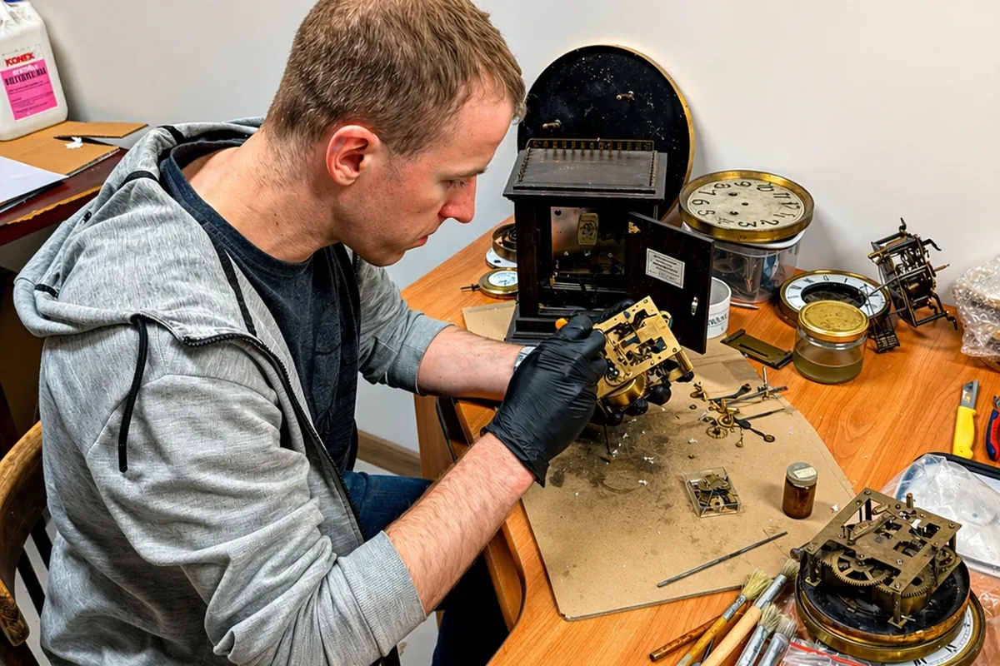
Naprawa zegarków i zegarów w Inowrocławiu i wysyłkowo z całej Polski
Rodzinny zakład przy ul. Królowej Jadwigi, w tym samym miejscu od 1947 roku. Diagnoza i wycena są bezpłatne, a o naprawie decydujesz dopiero, gdy znasz koszt.
Zgłoś naprawęul. Królowej Jadwigi 21A, Inowrocław pon.-pt. 10-18, sob. 9:30-13:30
Zgłoś naprawę w dwie minuty
Zaznacz, co to za czasomierz i co się z nim dzieje. Na końcu dostaniesz gotowe zgłoszenie, które wyślesz nam telefonem, przez WhatsApp albo mailem, razem ze zdjęciem.
Co naprawiamy
Zegarki mechaniczne, automatyczne i kwarcowe, codzienne i kolekcjonerskie, niezależnie od marki. Zegary ścienne, stojące, kominkowe i antyczne.
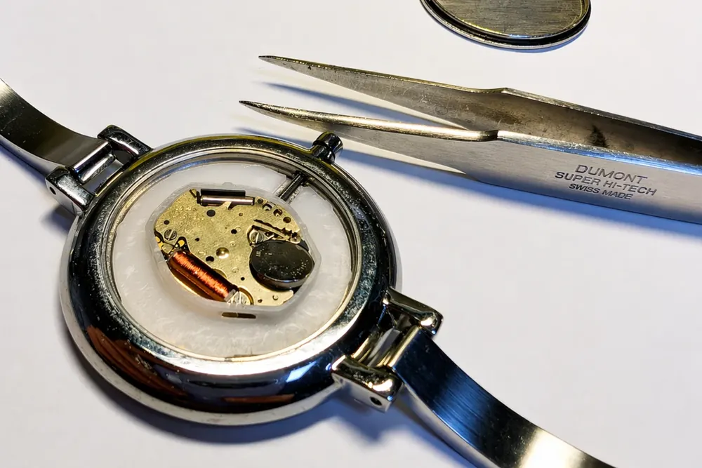
Zegarki
- wymiana baterii
- naprawa mechanizmów
- wymiana szkiełek
- uszczelnianie (wodoodporność)
- naprawa po zalaniu
- czyszczenie i konserwacja
- regulacja dokładności chodu
- skracanie i naprawa bransolet
- polerowanie kopert i bransolet
Naprawiamy m.in. zegarki Seiko, Citizen, Tissot, Certina, Longines, Orient, Casio, Atlantic, Zeppelin, a także Rolex, Omega, Rado, TAG Heuer, Maurice Lacroix i Hamilton.
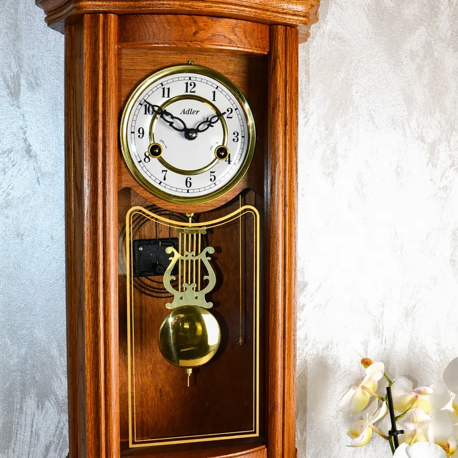
Zegary
- naprawa mechanizmów
- czyszczenie i konserwacja
- regulacja chodu
- naprawa zużytych czopów i łożysk (futrowanie)
- wymiana elementów mechanicznych
- problemy z biciem
- renowacja zegarów
Każdy mechanizm zegara rozbieramy na części, czyścimy i regulujemy ręcznie. Konserwacja co kilka lat (najczęściej co 5-7) pozwala uniknąć poważniejszych napraw.
Naprawa wysyłkowa z całej Polski
Nie musisz przyjeżdżać do Inowrocławia. Zegarek nadasz w paczkomacie, zegar pomożemy bezpiecznie zapakować.
- Paczkomat InPost
- Dostajesz od nas kod nadania. Bez drukowania etykiety, nadajesz, kiedy Ci wygodnie.
- Kurier z domu
- Kurier odbiera przesyłkę spod Twojego adresu. Potrzebny wydruk etykiety i ktoś w domu.
- Zegary
- Doradzamy, jak zapakować zegar, a w razie potrzeby przygotujemy odpowiednie zabezpieczenie.
Jak to przebiega
- Wysyłasz zgłoszenie albo dzwonisz.
- Ustalamy sposób przekazania i dostajesz kod lub instrukcję pakowania.
- Robimy bezpłatną diagnozę i podajemy koszt.
- Naprawiamy dopiero po Twojej akceptacji.
- Odsyłamy sprawny czasomierz.
Jeśli zrezygnujesz z naprawy, płacisz tylko za ewentualną wysyłkę zwrotną. Etap naprawy sprawdzisz po numerze zlecenia na stronie Status naprawy.
Z naszego warsztatu
Zegarki i zegary, które były u nas w naprawie. Zdjęcia z zakładu przy ul. Królowej Jadwigi.
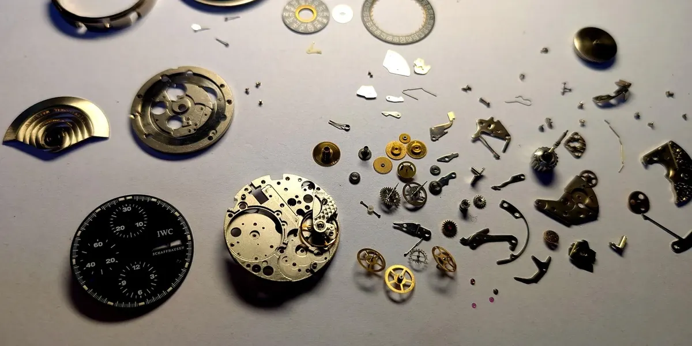
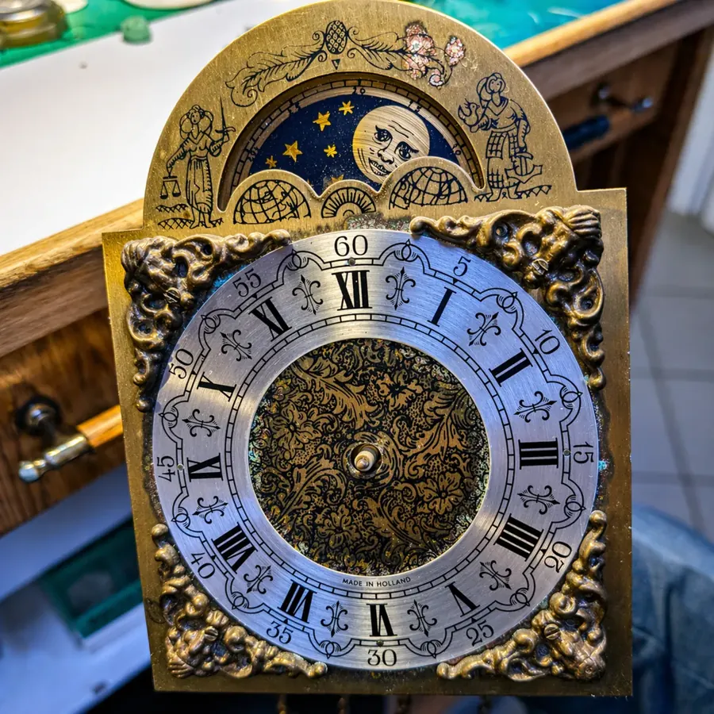
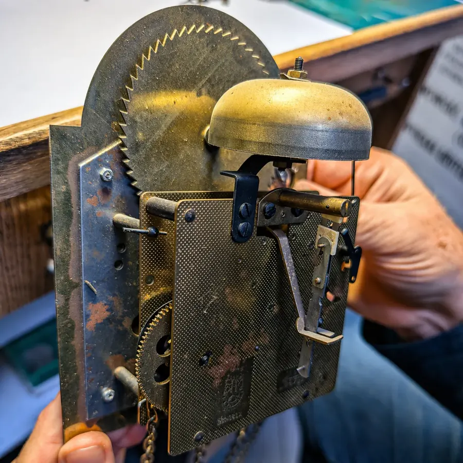
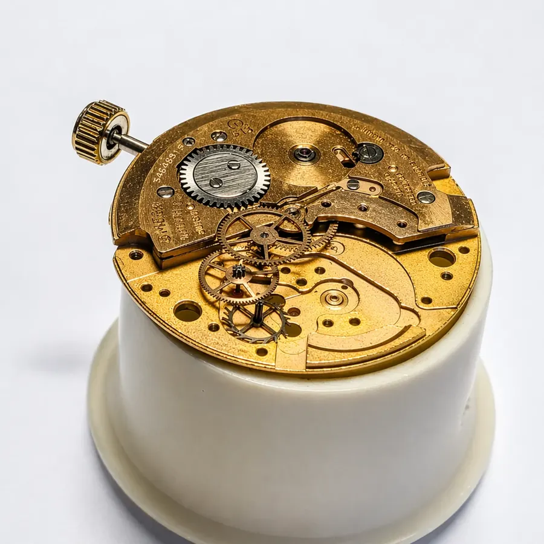
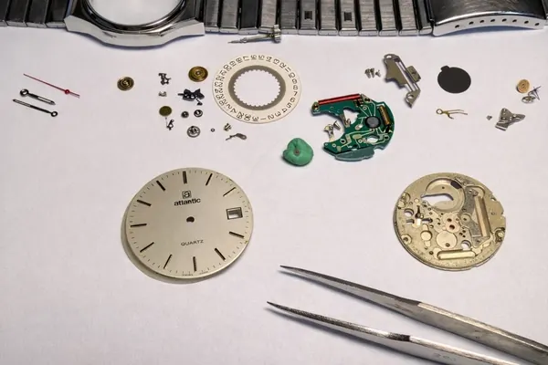
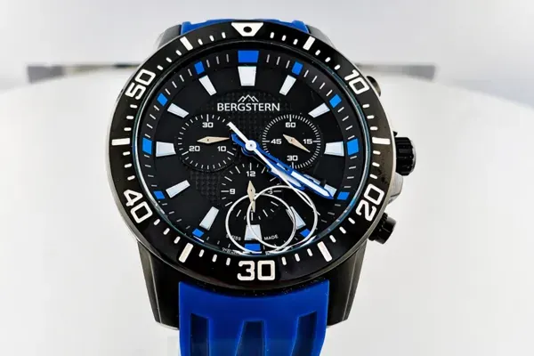
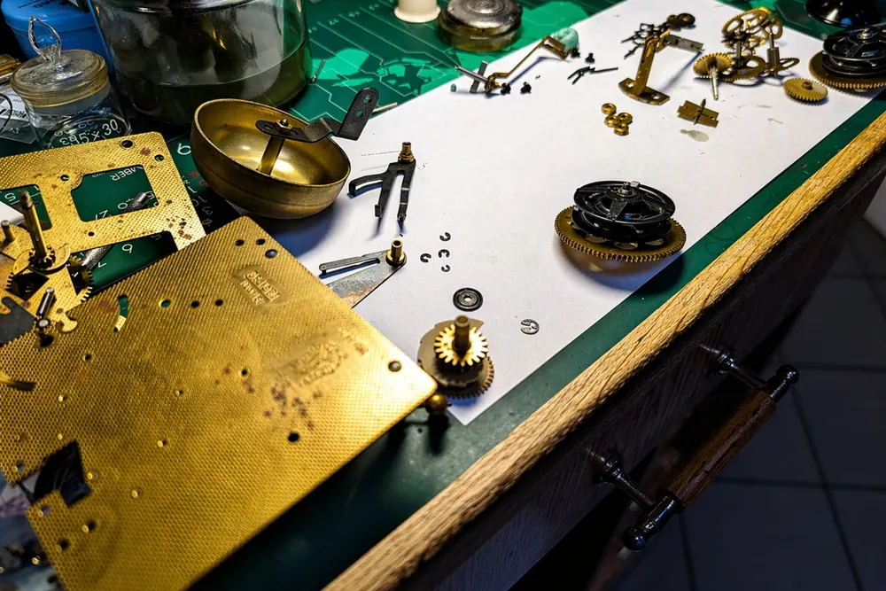
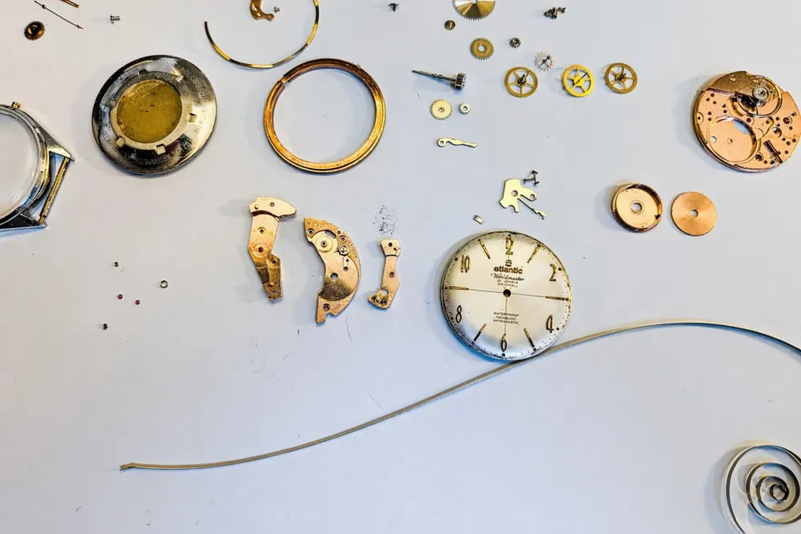
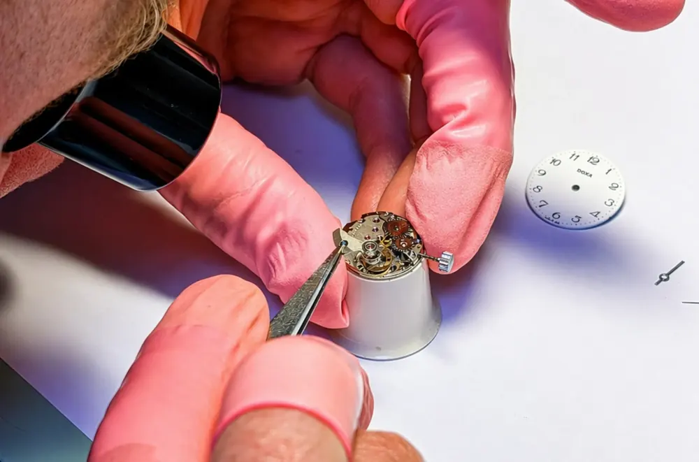
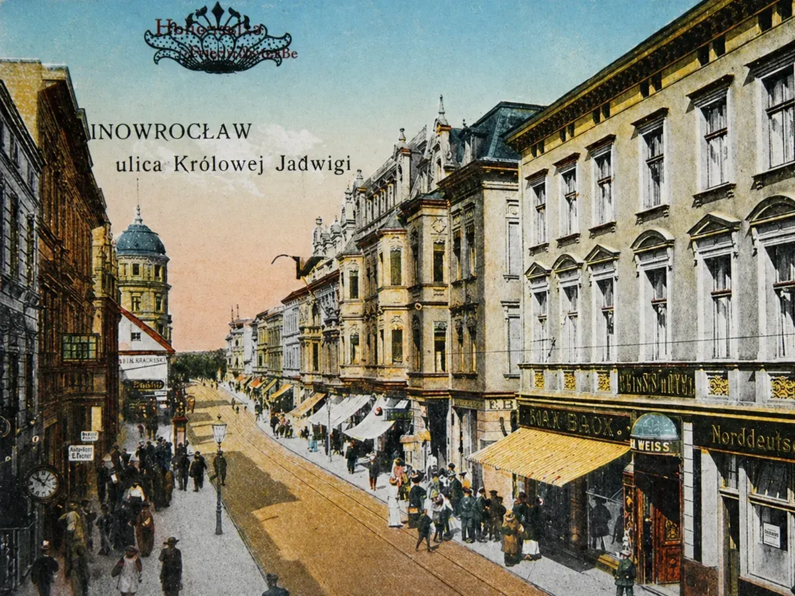
Ta sama ulica od 1947 roku
W 1947 roku przy Królowej Jadwigi pracę rozpoczął Antoni Meller. Wiedzę przejęli jego synowie, a potem kolejne pokolenie, które prowadzi zakład do dziś, w tym samym miejscu.
Naprawiamy zarówno nowe zegarki, jak i zabytkowe zegary. Na większość napraw dajemy 24 miesiące gwarancji.
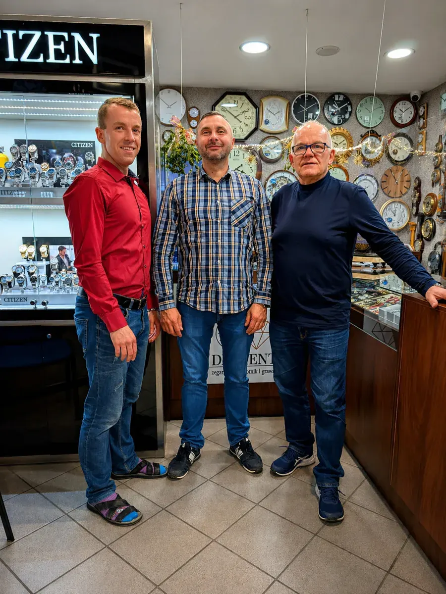
Co piszą klienci
Pełen profesjonalizm, świetny kontakt i oczywiście fachowa naprawa zegarków. Na każdym etapie informowanie o potencjalnych opcjach oraz możliwych kosztach. Polecam z czystym sumieniem.
Wysyłałam zegarek do naprawy ze Szczecina. Cały czas miły kontakt, pomocna rada, a na końcu naprawa zegarka za przystępną cenę. Całość przebiegła bardzo szybko.
Świetny kontakt i fachowa naprawa starego zegara, wszystko przebiegło bez problemu.
Profesjonalne podejście i pomoc przy wysyłce. Polecam.
Najczęstsze pytania
Ile kosztuje naprawa?
To zależy od usterki, modelu i potrzebnych części. Najpierw robimy bezpłatną diagnozę, podajemy dokładny koszt i to Ty decydujesz, czy naprawiamy.
Ile trwa naprawa?
Zegarki zwykle od kilku do kilkunastu dni, zależnie od usterki i dostępności części. Większość zegarów naprawiamy w około 1-2 tygodnie. O dłuższym czasie informujemy przy wycenie.
Co jeśli nie zdecyduję się na naprawę?
Nie płacisz za naprawę. Przy przesyłce pokrywasz tylko ewentualną wysyłkę zwrotną.
Czy wysyłka zegara jest bezpieczna?
Tak. Dostaniesz od nas wskazówki, jak zapakować zegar, a w razie potrzeby pomożemy przygotować zabezpieczenie.
Czy warto naprawiać stary zegarek?
W większości przypadków tak. Naprawa jest zwykle znacznie tańsza niż nowy zegarek, szczególnie przy modelach markowych albo pamiątkowych.
Kontakt i dojazd
Zegarmistrz Diamentul. Królowej Jadwigi 21A
88-100 Inowrocław
| Poniedziałek - piątek | 10:00-18:00 |
|---|---|
| Sobota | 9:30-13:30 |
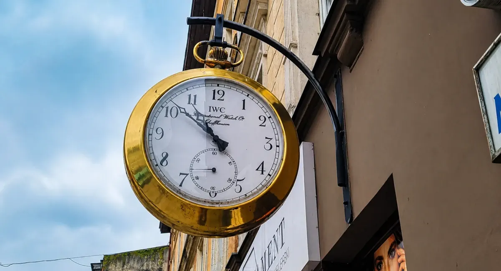